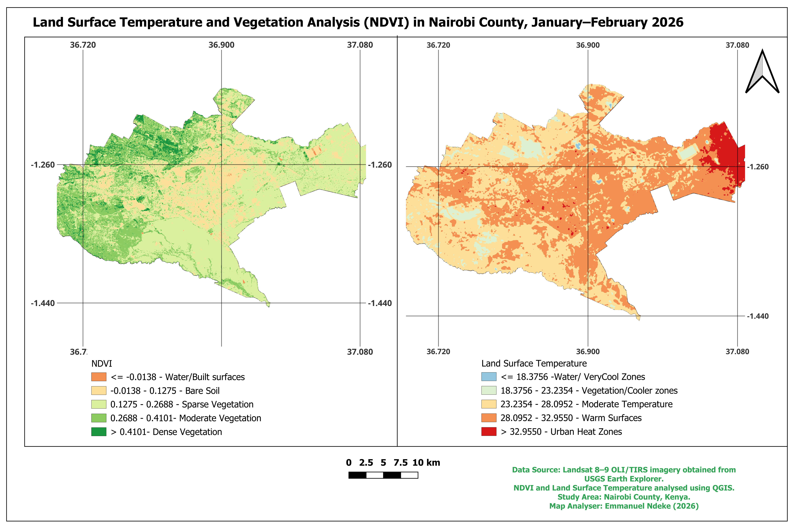

Spatial analysis of Land Satellite Temperature distribution in Nairobi using satellite imagery

The map compares vegetation cover and surface temperature across Nairobi County. Areas with higher vegetation density appear in green on the NDVI map and generally correspond with cooler surface temperatures. On the other hand, built-up areas with limited vegetation show lower NDVI values and higher land surface temperatures. This pattern highlights a well-known environmental phenomenon: urban areas tend to trap and retain more heat than vegetated areas. The analysis provides a simple but powerful visual reminder of the role that urban greenery plays in moderating temperatures in rapidly growing cities.
Satellite imagery was processed and classified to identify vegetation, water bodies, and built-up areas.
QGIS Software Landsat 8 and Landsat 9 imagery from USGS Earth Explorer